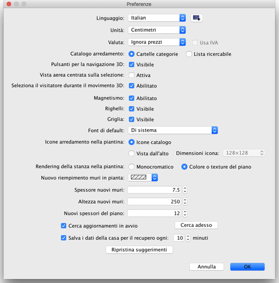

| Modificare le preferenze | |||
|
Per modificare le preferenze di Sweet Home 3D, scegli Sweet Home 3D > Preferenze... sotto Mac OS X oppure File > Preferenze... sotto altri sistemi operativi.  Nel pannello preferenze, puoi scegliere il Linguaggio usato per l'interfaccia utente di Sweet Home 3D e l'Unità di misura usata per disegnare i righelli e la griglia della piantina della casa, e per visualizzare lunghezze e aree. Il
check box Magnetismo abilita o disabilita il magnetismo
usato nella piantina della casa durante il disegno
dei muri e il posizionamento
dell'arredamento. Il settaggio Spessore nuovi muri imposta lo spessore di tutti i muri
che saranno creati dopo che il pannello preferenze verrà
chiuso. Infine il pulsante Ripristina suggerimenti ripristina le risposte date nel check box Non visualizzare nuovamente questo suggerimento nei box di dialogo suggerimenti visualizzati quando clicchi su qualche strumento. Questo significa che tutti i box di dialogo dove hai selezionato il suddetto checkbox riappariranno nuovamente.
|


|